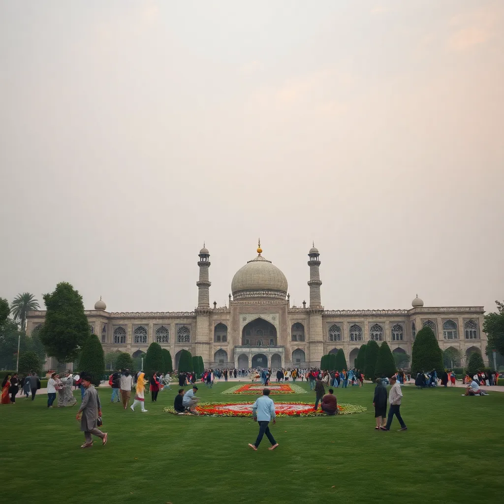
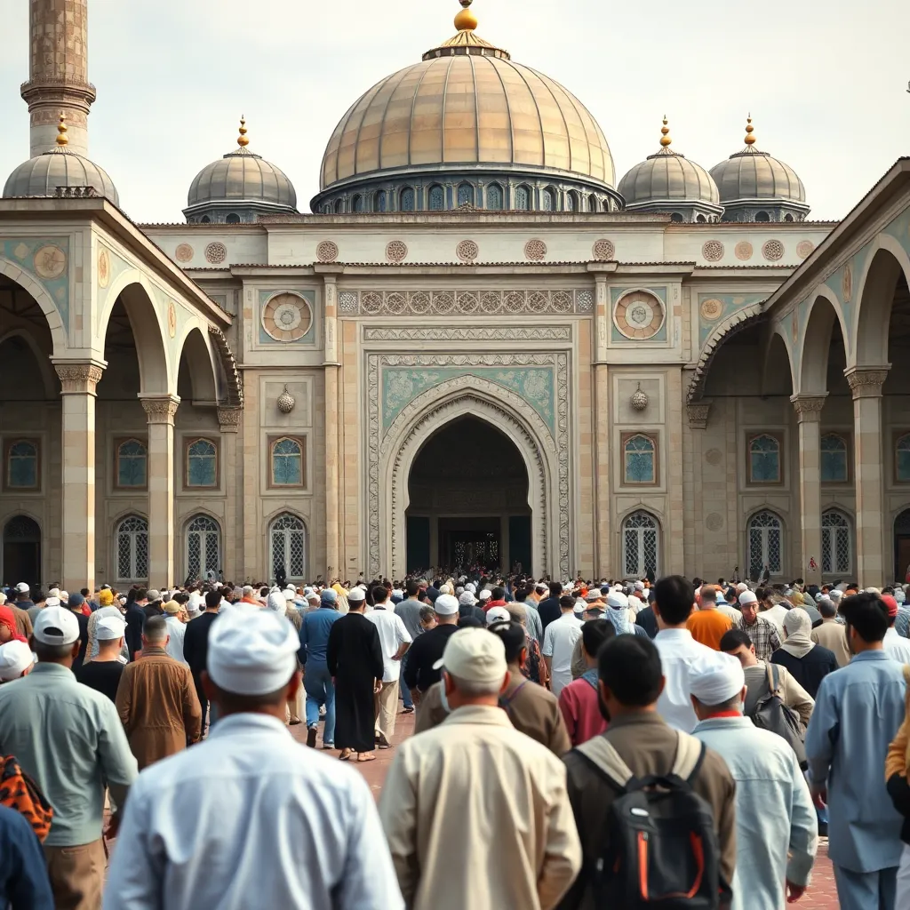

Projects & Events
The Afghan-American and Pashai Association of North Carolina (AAPANC) is dedicated to empowering and uniting our community through impactful projects and cultural events. Our initiatives focus on providing support, celebrating Afghan and Pashai heritage, and creating a sense of belonging. Explore our ongoing projects and upcoming events to see how we’re making a difference and how you can be part of our journey.
Current Projects
-
• Community Development Project
This project aims to provide resources and support for Afghan-American families settling in North Carolina, including job placement, language assistance, and community gatherings. Current focus: Expanding outreach to additional regions in North Carolina.
 -
• Cultural Preservation Initiative
Dedicated to preserving Afghan heritage, this initiative focuses on documenting and sharing Pashai traditions through cultural events, educational workshops, and digital archives. Current focus: Launching the Afghan Heritage Digital Archive.
 -
• Language Enrichment Program
An educational program offering free online and in-person classes in Pashai and Pashto to help Afghan-American youth stay connected to their roots. Current focus: Recruiting volunteer teachers and expanding the curriculum.
Upcoming Events
| Date | Event | Details |
|---|---|---|
| March 21 | Afghan Cultural Day | Celebrate Afghan culture with traditional food, music, and dance performances. |
| November 20 | Language Workshop | Join our workshop to learn Pashai and Pashto, designed for all levels. |
| May 4 | Community Networking Event | A networking event for Afghan-American families and community leaders. |